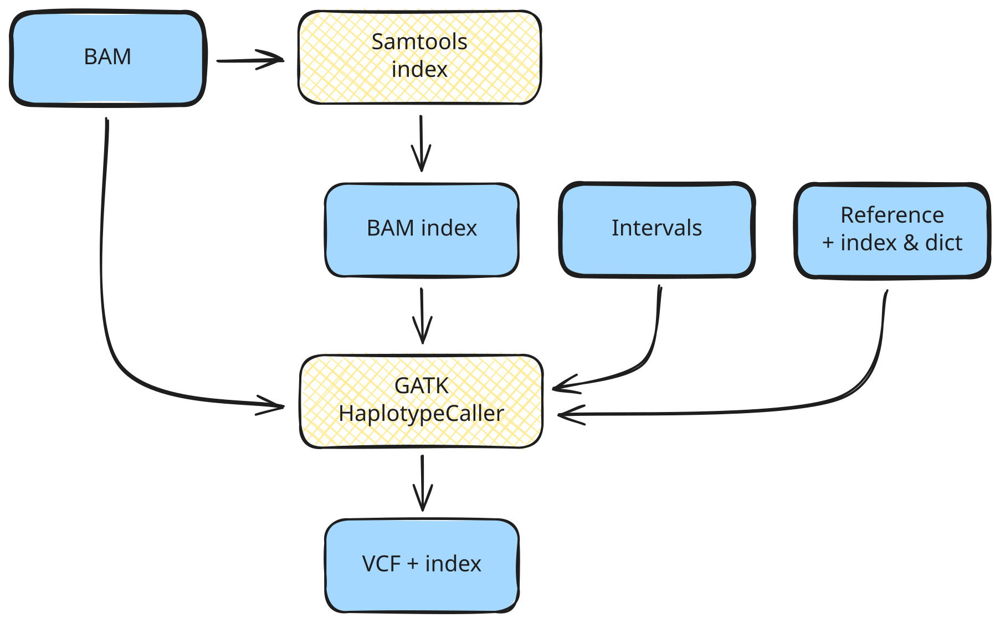

Develop a pipeline
Genomics variant-calling pipeline (exercise)
Learning outcomes
After having completed this chapter you will be able to:
- Implement a small genomics pipeline that indexes BAM files and calls variants.
- Organize the workflow into an entry script, process modules and a configuration file.
- Use a sample sheet and reference files to drive the pipeline.
- Produce per-sample VCF files and indexes starting from pre-aligned BAM files.
Scenario
The pipeline
Variant calling is a genomic analysis method that aims to identify variations in a genome sequence relative to a reference genome. Here we are going to use tools and methods designed for calling short germline variants, i.e. SNPs and indels, in whole-genome sequencing data. A full variant calling pipeline typically involves a lot of steps, including mapping to the reference (sometimes referred to as genome alignment) and variant filtering and prioritization. For simplicity, in this course we are going to focus on just the variant calling part.

You are given pre-aligned BAM files for a trio (mother, father, child) and a reference genome. Your task is to:
- Index each BAM file.
- Call variants on each indexed BAM using GATK HaplotypeCaller.
- Organize the outputs by type (BAMs and VCFs) in dedicated result folders.
You will write:
- A workflow file (entry point).
- Two modules (one for BAM indexing, one for variant calling).
- A configuration file with default parameters and a convenient profile.
The reference implementation can be found under solutions/genomics-pipeline/. Your goal is to recreate this behaviour as an exercise in the corresponding exercises/ folder.
Data and directory layout
Starting directory
Work in the exercise folder:
cd exercises/genomics-pipeline
This is the project folder structure aiming at developing a modularized, reproducible and scalable pipeline:
These are the files in the directory
genomics-pipeline
├── data
│ ├── bam
│ │ ├── reads_father.bam
│ │ ├── reads_mother.bam
│ │ └── reads_son.bam
│ ├── ref
│ │ ├── intervals.bed
│ │ ├── ref.dict
│ │ ├── ref.fasta
│ │ └── ref.fasta.fai
│ └── samplesheet.csv
├── genomics.nf
├── modules
│ ├── gatk_haplotypecaller.nf
│ └── samtools_index.nf
└── nextflow.config
Nextflow files
- Remember that the nextflow files are scaffolded only, meaning that they have the structure but not the content (except for the Docker containers where the processes will be executed).
Samplesheet
The file data/samplesheet.csv contains one BAM per line:
sample_id,reads_bam
NA12878,data/bam/reads_mother.bam
NA12877,data/bam/reads_father.bam
NA12882,data/bam/reads_son.bam
sample_id: sample identifier.reads_bam: path to the input BAM (relative to the project root).
Reference files
In data/ref/ you have:
ref.fasta: reference genome FASTA.ref.fasta.fai: FASTA index.ref.dict: sequence dictionary.intervals.bed: list of genomic intervals (subset of the genome to analyse).
Exercise 1 – Configuration file
Use the nextflow.config file in exercises/genomics-pipeline/ to create the following requirements:
- Container engine
- Enable Docker globally.
-
Set the parameters
inputreferencereference_indexreference_dictintervals
-
Crate the profile
testthat sets:inputtosamplesheet.csv.referencetoref.fasta.reference_indextoref.fasta.fai.reference_dicttoref.dict.intervalstointervals.bed.
Paths
- Remember that you need to consider the file locations. Refer to files with so that the paths work regardless of where the workflow is launched. You can use
${projectDir}to set the current directory as root to launch the pipeline.
You should be able to run the pipeline with:
nextflow run genomics.nf -profile test
Exercise 2 – BAM indexing module
Implement a module modules/samtools_index.nf that:
- Receives a BAM file as input.
- Runs
samtools indexto create the index (.bai).
Example samtools command
samtools index 'example.bam'
example.bam.bai
- Emits both the original BAM and the index as outputs in a tuple.
Tuple structure
| modules/samtools_index.nf | |
|---|---|
14 | |
Checklist
- Does the process emit both the BAM and its index?
- Does the filename of the
.baimatch the BAM (e.g.reads_mother.bam.bai)?
Exercise 3 – Variant-calling module
Implement a module modules/gatk_haplotypecaller.nf that:
- Receives:
- A tuple with a BAM and its index.
- The reference FASTA, its index and dictionary.
- The intervals file.
Input structure
| modules/gatk_haplotypecaller.nf | |
|---|---|
11 12 13 14 15 | |
- Runs GATK HaplotypeCaller to call variants.
Example GATK command
gatk HaplotypeCaller -R example_ref.fasta -I example.bam -O example.bam.vcf -L example_interval_list.bed
example.bam.vcf and example.bam.vcf.idx. You can split long commands using backslash (\).
Don’t you notice something?
We don’t need to specify the path to the index file; the tool will automatically look for it in the same directory, based on the established naming and co-location convention. The same applies to the reference genome’s accessory files (index and sequence dictionary files, .fai and .dict).
- Emits a VCF file (
example.bam.vcf) and its index (example.bam.vcf.idx).
Output structure
| modules/gatk_haplotypecaller.nf | |
|---|---|
18 19 | |
Checklist
- Does each input BAM produce exactly one VCF and one VCF index?
- Are VCF filenames clearly linked to the BAM filenames?
Exercise 4 – Workflow file
Populate the file genomics.nf as the entry point of the pipeline with the following behaviour.
Module inclusion
At the top of genomics.nf, include the two modules:
Importing modules
- Remember where the modules are stored, relative to workflow file, what their names are, and what they contain.
genomics.nf 1whatYouWantToInclude { nameOfTheProcess } from 'whereAreTheModules'
Workflow logic
In the workflow block:
- Create the BAM channel
- Read
params.input(CSV with header). - For each row, extract the
reads_bamfield and convert it to a file object.
- Read
Read CSV
- You need to create a channel using one of the channel factories, then apply the operator splitCsv(), and then use map{} to extract what you need from the CSV
genomics.nf 11 12 13
example_channel = channelFactory(whereTheCsvIs) .splitCsv(DoesItHaveHeader) .map { closure }
- Load reference paths
- Convert the parameters for reference, index, dictionary and intervals into file objects.
Load parameters into file objects
- Use the function file() to declare which parameters are required as files
genomics.nf 16anyFile = file(fileDeclaredInParameters)
- Index BAM files
- Run
SAMTOOLS_INDEXon the BAM channel.
- Run
Declare the process
- Remember that you have to use the name of the process and what the input(s) is/are. They must match with the input declaration in the module itself
genomics.nf 22PROCESS(input)
- Call variants
- Run
GATK_HAPLOTYPECALLERusing:- The output of
SAMTOOLS_INDEX. - The reference files.
- The output of
- Run
Declare the process
- This process has many inputs, the order must match with the order declared in the module.
genomics.nf 22 23 24 25 26 27 28
GATK_HAPLOTYPECALLER( OutputFromAnotherProcess, file1, file2, file3, file4 )
Published outputs
Add a publish section in the workflow that:
- Assigns:
indexed_bamto the output ofSAMTOOLS_INDEX.vcfandvcf_idxto the outputs ofGATK_HAPLOTYPECALLER.
Publish declaration
| genomics.nf | |
|---|---|
33 34 35 | |
Then add an output block that:
- Writes:
- All indexed BAMs and
.baifiles underresults/bam/. - All VCFs and VCF indexes under
results/vcf/.
- All indexed BAMs and
Output block
| genomics.nf | |
|---|---|
40 41 42 43 44 45 46 47 48 | |
Question: Why are there only three declared outputs?
Output of SAMTOOLS_INDEX
Remember that the output of SAMTOOLS_INDEX is a tuple, and hence that channel carries both files .bam and .bam.bai.
Test the pipeline
Run and verify
- Run:
nextflow run genomics.nf -profile test - Check:
results/bam/contains three.bamfiles and three.baifiles.results/vcf/contains three.vcffiles and three.vcf.idxfiles.
Solution
Solution
You can find the solution to this exercise here.